<!doctype html><html lang="en"><head><meta charset="utf-8"><meta name="viewport" content="width=device-width,initial-scale=1">
<title>Post-digital sax - a digitally controlled acoustic single-reed woodwind instrument</title><link rel="stylesheet" href="../../../style.css"></head><body>
<header class="site"><a href="../../../index.html">NIME 2021–2022 archive</a> <span class="muted">experimental static edition of the PubPub proceedings</span></header>
<main><nav class="muted"><a href="../../../index.html">Archive</a> › <a href="../../index.html">2022</a> › <a href="../index.html">Papers</a></nav><article><h1 class="title">Post-digital sax - a digitally controlled acoustic single-reed woodwind instrument</h1>
<div class="byline">Krzysztof Cybulski<div class="aff"></div></div>
<div class="meta"><b>Track</b><span>Papers · NIME 2022 · Auckland (hybrid)</span><b>BibTeX key</b><span><code>nime2022_14</code></span><b>DOI</b><span><a href="https://doi.org/10.21428/92fbeb44.756616d4">10.21428/92fbeb44.756616d4</a></span><b>Version of record</b><span><a href="https://nime.pubpub.org/pub/q8f786b3">https://nime.pubpub.org/pub/q8f786b3</a></span><b>PDF</b><span><a href="https://nime.pubpub.org/pub/q8f786b3/download/pdf">PubPub PDF</a></span><b>Presentation video</b><span><a href="https://youtu.be/RnuEvjMdEj4">https://youtu.be/RnuEvjMdEj4</a> <span class="badge ok">link live</span> <span class="muted">POST-DIGITAL SAX NIME 2022</span></span><b>Media in archive</b><span><code>audio1.wav</code>, <code>audio2.wav</code>, <code>audio3.wav</code>, <code>audio4.wav</code>, <code>video1.mp4</code></span><b>Licence</b><span>CC BY 4.0</span></div>
<div class="editor"><h1 id="abstract">Abstract</h1><p>In a search for a symbiotic relationship between the digital and physical worlds, I am developing a hybrid, digital-acoustic wind instrument - the Post-Digital Sax. As the name implies, the instrument combines the advantages and flexibility of digital control with a hands-on physical interface and a non-orthodox means of sound production, in which the airflow, supplied by the player’s lungs, is the actual sound source. The pitch, however, is controlled digitally, allowing a wide range of musical material manipulation, bringing the possibilities of a digitally augmented performance into the realm of acoustic sound.</p><h2 id="author-keywords">Author Keywords</h2><p>NIME, hybrid instrument, post-digital, saxophone</p><h2 id="ccs-concepts">CCS Concepts</h2><p><strong>•Human-centered computing → </strong><em>Sound based input / output</em>; <br/><strong>•Interaction devices → </strong><em>User interface design</em>;</p><h1 id="introduction">1. Introduction</h1><p>Acoustic instruments are still in the center of musical activity in many genres for a number of reasons. From the player’s perspective, they offer immediate response to actions and gestures, as well as direct auditory and tactile feedback. Listeners in turn may appreciate their sonic qualities, such as subtleties of dynamics and unique directivity patterns. <a href="#citation-bGVh/F5DgI-bottom" id="citation-bGVh/F5DgI-inline" data-node-type="citation" class="citation">[1]</a> Yet, digital technology provides a number of features which are impossible to achieve with traditional acoustic instruments, thus it might be implemented to enhance their capabilities. A typical scenario would involve digital processing of acoustic sound, which is then projected through a speaker system; however, this approach detaches the sound source from the actual instrument, creating an experience which might be perceived as unnatural or confusing. Thus, various approaches have been developed to deal with this issue.</p><p>The Post-Digital Sax (abbreviated further as P-D Sax) aims to preserve the key features of acoustic instruments, while taking advantage of digital technology. It uses a vibrating reed and the player’s breath as an actual sound source, thus it might be considered an acoustic instrument. Nevertheless, as the pitch is controlled digitally by mechanical vibrations induced in the reed by an electromagnetic actuator, a wide array of digital interventions can be implemented.</p><h2 id="prior-work">1.1 Prior Work</h2><p>Digitally augmented acoustic instruments span a broad spectrum, which could be divided into following categories:</p><ol id="nxq46n0c8tk"><li><p>fully digital instruments, in which only the interface resembles an acoustic instrument;</p></li><li><p>augmented acoustic instruments, in which the acoustic sound is digitally transformed;</p></li><li><p>actuated instruments, where the acoustic generators are actuated with digitally controlled mechanisms, while still enabling the hands-on control;</p></li><li><p>fully robotic acoustic instruments;</p></li></ol><p>Regarding the P-D Sax, the actuated instruments category is the most relevant. It is distinguished by preserving both the ability to play the instrument in an usual way and the acoustic character of the sound, while benefiting from the digital augmentations. Notable examples of this approach include magnetically actuated pianos by Per Bloland <a href="#citation-UKA77SnSzu-bottom" id="citation-UKA77SnSzu-inline" data-node-type="citation" class="citation">[2]</a> and Andrew McPherson <a href="#citation-cFr6zJy+1v-bottom" id="citation-cFr6zJy+1v-inline" data-node-type="citation" class="citation">[3]</a> , bowed string instruments such as the Overtone Fiddle <a href="#citation-pcYU17iMV3-bottom" id="citation-pcYU17iMV3-inline" data-node-type="citation" class="citation">[4]</a> , Svampolin <a href="#citation-IHm5WaCB2O-bottom" id="citation-IHm5WaCB2O-inline" data-node-type="citation" class="citation">[5]</a> and Halldorophone <a href="#citation-zvonuO/G/B-bottom" id="citation-zvonuO/G/B-inline" data-node-type="citation" class="citation">[6]</a> , plucked string instruments such as the Cyther <a href="#citation-Wk9WdEkYjc-bottom" id="citation-Wk9WdEkYjc-inline" data-node-type="citation" class="citation">[7]</a> and percussion instruments, such as the Haptic Drum <a href="#citation-b/046ssvA8-bottom" id="citation-b/046ssvA8-inline" data-node-type="citation" class="citation">[8]</a> .</p><p>While the woodwind-inspired electronic instruments also tend to fall into similar categories, it’s difficult to find examples fulfilling the criteria for an actuated instrument:</p><ol id="n2ppkg267d0"><li><p>fully electronic instruments/controllers, with user interface resembling that of a saxophone. Their main purpose is to provide a familiar user interface and to allow additional expression by utilizing breath/lip pressure sensors, as is the case with EWI <a href="#citation-FSNVsLDl+I-bottom" id="citation-FSNVsLDl+I-inline" data-node-type="citation" class="citation">[9]</a> and EMEO <a href="#citation-7Sc0R0Ev77-bottom" id="citation-7Sc0R0Ev77-inline" data-node-type="citation" class="citation">[10]</a> . They usually require external speakers, although some have a built-in speaker, like Yamaha YDS-150 <a href="#citation-sjUDxKQ5eU-bottom" id="citation-sjUDxKQ5eU-inline" data-node-type="citation" class="citation">[11]</a> , making it an embedded acoustic instrument <a href="#citation-srYbwT8lJp-bottom" id="citation-srYbwT8lJp-inline" data-node-type="citation" class="citation">[12]</a> . Some examples also provide haptic feedback, such as the Hybrid Clarinet Project <a href="#citation-c9Rb3XHopg-bottom" id="citation-c9Rb3XHopg-inline" data-node-type="citation" class="citation">[13]</a> .</p></li><li><p>acoustic instruments with digitally augmented sound, usually with a microphone and additional controllers attached to the instrument; the digitally processed sound is reproduced by external speaker, as is the case with Gluisax <a href="#citation-dJsICXf0+2-bottom" id="citation-dJsICXf0+2-inline" data-node-type="citation" class="citation">[14]</a> and Metasaxophone <a href="#citation-5LekVQ0sdY-bottom" id="citation-5LekVQ0sdY-inline" data-node-type="citation" class="citation">[15]</a> ; some instruments, such as the HypeSax <a href="#citation-BQPO1fgjmG-bottom" id="citation-BQPO1fgjmG-inline" data-node-type="citation" class="citation">[16]</a> aim to blend the original acoustic sound with its processed version by placing the speaker on or inside the instrument</p></li><li><p>?</p></li><li><p>fully acoustic robotic wind instruments, such as the NICTA Robot Clarinet <a href="#citation-VopKP2ayKN-bottom" id="citation-VopKP2ayKN-inline" data-node-type="citation" class="citation">[17]</a> and Waseda Saxophonist Robot <a href="#citation-baNQcuGsrP-bottom" id="citation-baNQcuGsrP-inline" data-node-type="citation" class="citation">[18]</a> ; they focus on the ability to control the acoustic sound digitally, but usually fall short of providing a comfortable interface or a satisfying user experience; although at least one example - the Infinitone <a href="#citation-iiInJY0GPt-bottom" id="citation-iiInJY0GPt-inline" data-node-type="citation" class="citation">[19]</a> - preserves the ability to control the sound by blowing an actual mouthpiece with a reed; the predominant way to digitally control the pitch is a set of actuators, operating on the keywork of the instrument; their common trait is that the user interface is a separate entity, with the instrument itself being overwhelmed with mechanical actuators, which impose additional latency and noise;</p></li></ol><h2 id="advantages-of-the-p-d-sax">1.2 Advantages of the P-D Sax</h2><p>The P-D Sax proposes an alternative approach of controlling the frequency of reed vibration by the electromagnetic force. To the best of my knowledge, the only devices producing sound by similar means, i.e. by mechanical interruption of the air stream, are the obsolete compressed-air speakers/gramophones <a href="#citation-AD3S350RmC-bottom" id="citation-AD3S350RmC-inline" data-node-type="citation" class="citation">[20]</a> and musical sirens <a href="#citation-aZHGHXaDze-bottom" id="citation-aZHGHXaDze-inline" data-node-type="citation" class="citation">[21]</a> , which would make the P-D Sax the first practical implementation of this sound making principle in the form of an embedded acoustic instrument, as well as the first wind instrument falling into the actuated instruments category.</p><p>Further advantages of this approach are as follows:</p><ul id="ntvdfdx034r"><li><p>in the purely electronic saxophone-like instruments, the parameters of a breath/pressure sensor are arbitrarily mapped to various features of the sound; in the P-D Sax the reed and breath are actual sound generators; changes in the air pressure and embouchure influence the volume and timbre of the sound directly; </p></li></ul><ul id="njml1mbx7h0"><li><p>in the magnetically actuated string instruments, while the frequency of vibration of electromagnetic field can be varied, it doesn&#x27;t change the physical properties of the string, i.e. its natural frequency; in the case of the P-D Sax, the magnetic field directly controls the frequency of the sound generator;</p></li><li><p>the P-D Sax can produce a much lower pitch than could be provided by an acoustic instrument of the same length;</p></li></ul><ul id="n2z8k2yy8k0"><li><p>the mapping of the interface may be customized, either to fit a specific performance scenario, ot to suit the needs of a specific group, e.g. children or musicians with disabilities;</p></li></ul><ul id="nb8wgy9zyco"><li><p>nonstandard musical scales can be freely assignable and switchable;</p></li><li><p>a number of interventions in the musical material is possible;</p></li></ul><h2 id="research-overview">1.3 Research Overview</h2><figure id="n6ih630ecvn" class="image"><a href="https://assets.pubpub.org/979bqded/71649966014253.png">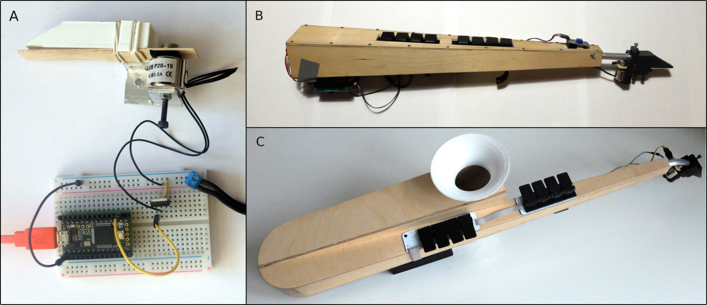</a><figcaption id="n6ih630ecvn-figure-caption"><div><strong>Image 1</strong><div><p>Three prototypes of the P-D Sax: A. prototype 1, B. prototype 2, C. prototype 3</p></div></div></figcaption></figure><p>Initial motivation for the research was to test a new approach to acoustic sound production. First experiments resulted in the prototype 1 - a proof of concept prototype of the mouthpiece. After successful initial tests, prototype 2 was built to test the approach in the form of an embedded acoustic instrument. As the instrument showed promise with regards to a planned personal music project, the prototype 3 was built - a refined version of the embedded instrument with a larger sound horn, continuous keys, lip pressure sensor and additional joystick controller. Following sections will focus on the prototype 3.</p><h1 id="design">2. Design</h1><h2 id="basic-principle">2.1 Basic Principle</h2><figure id="ns67a1nia1c" class="image"><a href="https://assets.pubpub.org/0yob6mc2/21649966179797.png">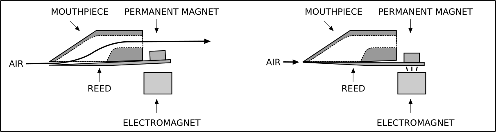</a><figcaption id="ns67a1nia1c-figure-caption"><div><strong>Image 2</strong><div><p>Basic principle of operation of the P-D Sax mouthpiece: electromagnet inactive - the airway is open (left); electromagnet active - the airway is closed (right);</p></div></div></figcaption></figure><p>While in a traditional single-reed instrument the frequency of reed oscillation is determined by the resonant frequency of the air column, in the P-D sax the reed is forced to vibrate at an arbitrary frequency by an electromagnetic force. Nevertheless, the air from the player’s lungs is still a component necessary to produce sound and its pressure directly affects the volume, while the vibrating reed serves the function of an air valve. As the reed is in contact with one of the player’s lips, the timbre can be controlled by the change of embouchure. In order to vibrate the reed with magnetic field, a permanent magnet has to be attached to the reed <a href="#citation-ddvxO3PI8/-bottom" id="citation-ddvxO3PI8/-inline" data-node-type="citation" class="citation">[22]</a> .</p><h2 id="reed-and-mouthpiece">2.2 Reed and Mouthpiece</h2><figure id="ncx08i64rbh" class="image"><a href="https://assets.pubpub.org/rj9gzv5t/11642798560638.JPG">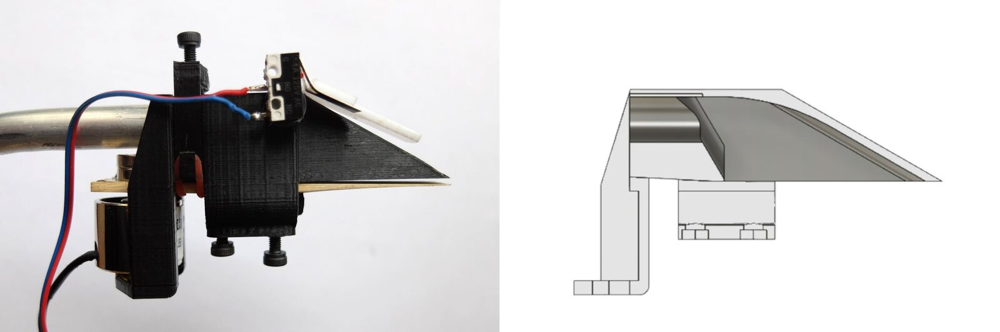</a><figcaption id="ncx08i64rbh-figure-caption"><div><strong>Image 3</strong><div><p>P-D Sax’s mouthpiece (left); cross-section of a 3D model (right)</p></div></div></figcaption></figure><p>Although a standard (slightly modified) tenor saxophone reed is used, the custom, 3D-printed mouthpiece differs from that of a saxophone. The reed is attached in a way which allows a hinged movement; consequently, a permanent magnet can be attached to the far end of the reed, allowing the other end to be placed inside the player’s mouth. The electromagnet, which attracts the movement of the reed, is attached with a bolt; the reed is fixed with a bolt-adjustable rubber o-ring and a neoprene strip.</p><p>As the electromagnetic actuation of the reed shows a significant nonlinearity, experiments with different waveforms controlling the power of the electromagnet yielded similar results, with a sudden jump of the reed after the electromagnetic field value exceeded a certain threshold. At 1 Hz frequency, the motion pattern of the reed always resembles the pulse wave, only the duty cycle changes depending on the shape of the wave driving the electromagnet. Therefore, for further experiments, a pulse wave was chosen as a default waveform modulating the magnetic field.</p><figure id="nfod6ufjbzx" class="image"><a href="https://assets.pubpub.org/16a94hii/21649966400086.png">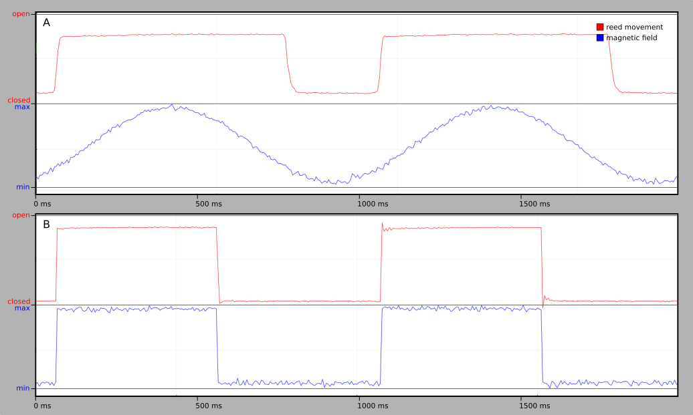</a><figcaption id="nfod6ufjbzx-figure-caption"><div><strong>Image 4</strong><div><p>Movement of the reed, measured with a proximity sensor: A. with sine wave driving the electromagnet at 1 Hz frequency; B. with pulse wave driving the electromagnet at 1 Hz frequency</p></div></div></figcaption></figure><p>The reed has a certain inertia, which causes a slightly sloped movement at the onset of the cycle; it also bounces off the mouthpiece at extreme positions, creating a small ripple. At 1 Hz these artifacts are barely noticeable; however, with rising frequency, they consume a gradually larger portion of the cycle, resulting in the pattern of reed movement changing from a pulse wave to a nearly sawtooth wave, which is reflected in the instrument’s timbre.</p><figure id="n45qhv28bpr" class="image"><a href="https://assets.pubpub.org/3yxz5p6z/21649966487632.png">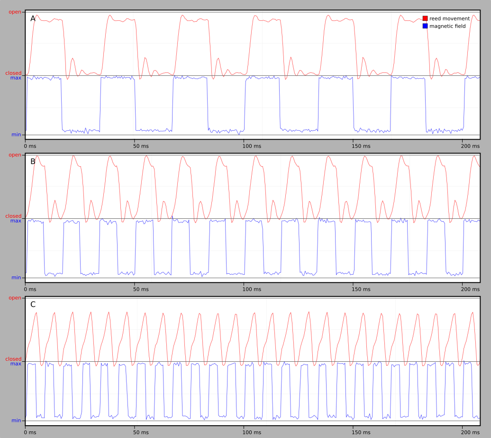</a><figcaption id="n45qhv28bpr-figure-caption"><div><strong>Image 5</strong><div><p>Movement of the reed, measured with a proximity sensor at: A. 30 Hz, B. 60 Hz, C. 120 Hz</p></div></div></figcaption></figure><h1 id="body">2.3 Body</h1><p>While in a traditional woodwind the body acts both as a container of the resonating air column and as an acoustic horn, in the P-D Sax only the latter function is preserved - although the instrument’s body doesn’t influence the frequency of reed oscillation, it still influences the volume and timbre of the sound.</p><figure id="n12xwze77pg" class="image"><a href="https://assets.pubpub.org/9bp9aodj/41649966659728.JPG">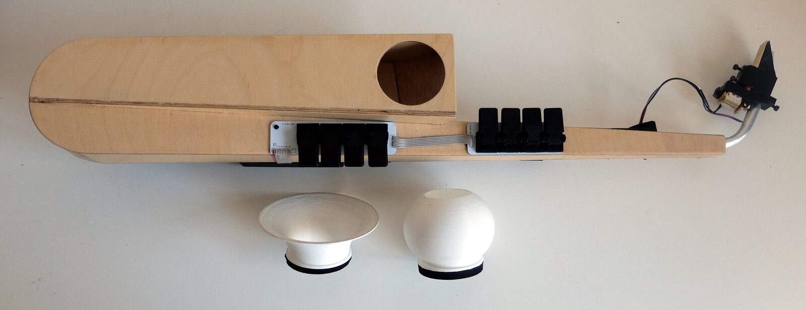</a><figcaption id="n12xwze77pg-figure-caption"><div><strong>Image 6</strong><div><p>Prototype 3 of the P-D Sax and two exchangeable bells</p></div></div></figcaption></figure><p>Apart from acoustic considerations, both the ergonomics and aesthetics of the instrument were taken into account. It was inspired by the Paetzold recorder <a href="#citation-pa1Xius/2z-bottom" id="citation-pa1Xius/2z-inline" data-node-type="citation" class="citation">[23]</a> and Bart Hopkins’ wooden saxophones <a href="#citation-aZHGHXaDze-bottom" id="citation-aZHGHXaDze-inline" data-node-type="citation" class="citation">[21]</a> . It was designed in Autodesk Fusion 360 software and built from plywood. The body forms a closed pipe approximately 94 cm long. The circular hole in the front wall can be equipped with a 3d-printed bells.</p><h2 id="electronics-and-user-interface">2.4 Electronics and user interface</h2><figure id="neivlb8q4qm" class="image"><a href="https://assets.pubpub.org/unr9oawi/31649966893768.png">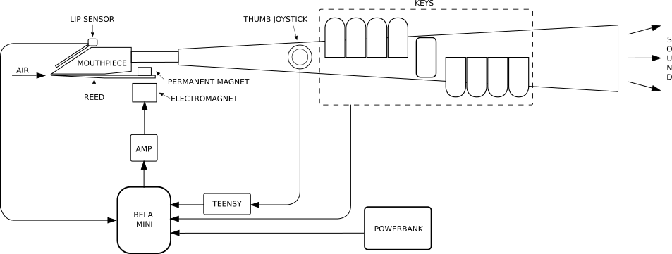</a><figcaption id="neivlb8q4qm-figure-caption"><div><strong>Image 7</strong><div><p>Block diagram of the Prototype 3 of the P-D Sax</p></div></div></figcaption></figure><p>The electronic part of the instrument is based on a Bela Mini board, running a custom Pure Data patch; analog and digital GPIO are used to provide control signals from the user interface. As the Bela provides only 8 analog inputs which are used for the keys, a Teensy 3.2 board in a midi controller mode is used for additional 2 analog inputs, necessary for the thumb joystick.</p><p>A set of 3D-printed keys forms the basis of the user interface. The eight keys on the front are based on a typical recorder layout; the lower six are responsible for the diatonic scale; the top two transpose the notes up and down a semitone to provide a chromatic range. The keys are continuous, enabling smooth note transitions. Each key mechanism has three embedded magnets, two of which act as a spring; a third one is placed directly above a SS49E proportional hall sensor - when the key is depressed, the readout of the sensor changes proportionally to the key’s position (a similar approach have been used by Conforti &amp; Güsewell <a href="#citation-pa1Xius/2z-bottom" id="citation-pa1Xius/2z-inline" data-node-type="citation" class="citation">[23]</a> ). A custom rocker switch enables up/down octave transposition, giving the instrument a 3-octave range. As the prototype 3 was primarily meant to be tested and played by myself due to Covid 19 restrictions, it was adjusted to my personal needs by arranging the keys in a left-handed layout.</p><figure id="neoatqcnfjn" class="image"><a href="https://assets.pubpub.org/0j7akbsl/11642798772896.JPG">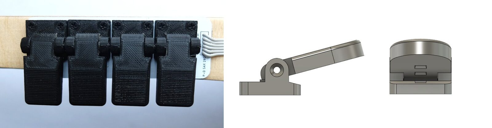</a><figcaption id="neoatqcnfjn-figure-caption"><div><strong>Image 8</strong><div><p>Top view of the keys (left); 3D model of an earlier version of the keys (right)</p></div></div></figcaption></figure><p>As the line output of Bela Mini provides the voltage range of 0-2.3V, it was chosen over the headphone output, as its 0V-based range is more suitable for driving the electromagnet. The signal is amplified by a BD241C NPN bipolar transistor in a simple circuit.</p><p>All the electronic components are connected by a custom PCB. Additional PCBs are used for the hall sensors and tact switches, used as the key sensors and octave switches. The instrument is powered by a 5V power bank.</p><p>As the vibration of the reed is slightly audible even without action on the player’s part, an endstop switch with an additional lever, pressed by the upper lip of the player, is attached to the mouthpiece. Apart from muting the reed vibration when unnecessary, the lip sensor also provides the gate signal at the beginning of each phrase, which is currently used to control the phrase looping feature.</p><h2 id="software">2.5 Software</h2><figure id="nzl2ow3i25q" class="image"><a href="https://assets.pubpub.org/damhglen/51642806400679.PNG">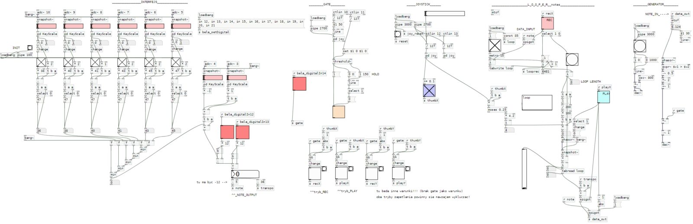</a><figcaption id="nzl2ow3i25q-figure-caption"><div><strong>Image 9</strong><div><p>Pure Data patch, controlling the P-D Sax</p></div></div></figcaption></figure><p>The P-D Sax uses a simple Pure Data patch; its main function is to interpret the data from the sensors and to generate a sound wave of appropriate frequency, which is then amplified and sent to the electromagnet. </p><p>The signals from the keys’ hall sensors are mapped to the 0-1 range and translated into midi notes. Currently, the instrument is tuned in twelve-tone equal temperament, but the software may be adjusted to accommodate any other tuning system.</p><p>Depending on the position of the thumb joystick, the oscillator can be controlled either directly by the signals from the keys, or by data stored in a loop. While the joystick is in the default position, each gate signal from the lip sensor engages a new loop capture; when the joystick is moved to the right, a gate signal restarts the playback of the recently captured loop. The loop playback speed can be manipulated with the joystick; the looped notes can be transposed using the keys.</p><h1 id="results">3. Results</h1><figure class="video"><a class="media-link" href="https://assets.pubpub.org/sntypkqx/41642810940362.mp4">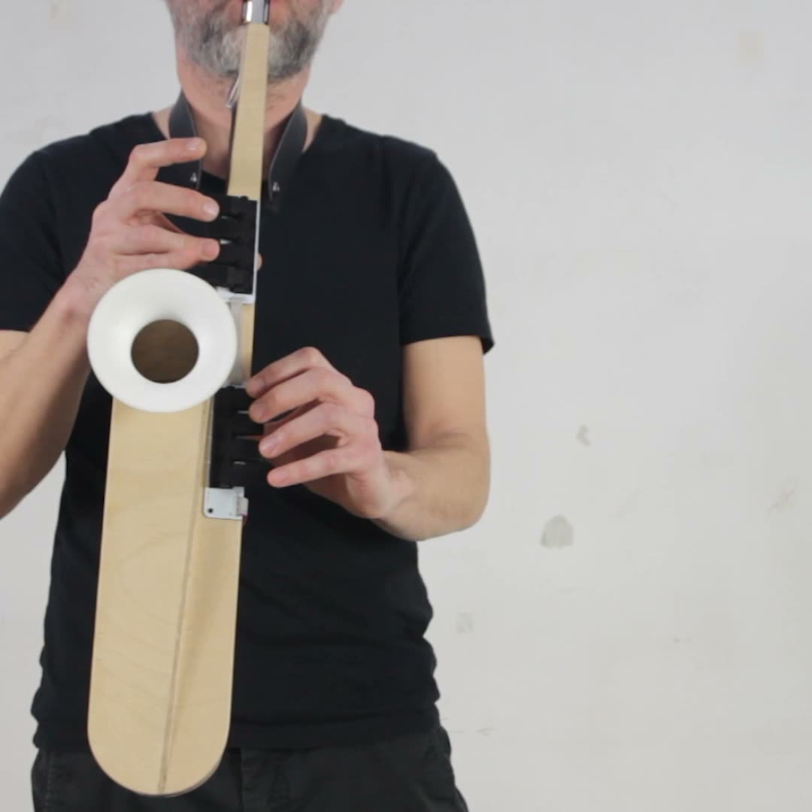<span class="play">▶</span></a><figcaption id="nrp2h73w71b-figure-caption"><div><strong>Video 1</strong><div><p>P-D Sax in action; phrase looping can be heard at 0:09, 0:33 and 1:26 https://www.dropbox.com/s/d8665k92zm2od4r/p-d%20sax%20in%20action.mp4?dl=0</p></div></div></figcaption><div class="media-meta">Video hosted on PubPub CDN (136 MB · 2 min). Not included in this static site.<div class="muted">archive file: <code>2022/in_proceedings/papers/nime2022_14/video1.mp4</code></div></div></figure><p>Prototype 3 of the P-D Sax is a fully functioning, playable acoustic embedded instrument. To test the influence of different sound horns and bells, as well as different playing techniques on the timbre and loudness of P-D Sax, samples under various conditions have been recorded and evaluated. The experiments showed that the instrument produces a complex waveform, with both even and odd harmonics present; the timbre and loudness of the instrument are affected by different sized sound horns and bells, and by changes in the embouchure. Waveforms and spectra of the samples, loudness measurements, as well as sound samples are included in the appendices A, B, C and D.</p><p>According to the formula f = v/λ the resonant frequency of the P-D Sax body is 91.22 Hz. Nevertheless, as the instrument’s pitch isn’t determined by the length of the air column, a lowest note was set at 23.12 Hz (F#0), which is just above a typical lower limit of the human hearing range. A pipe of a traditional woodwind instrument would have to be almost 4 times longer to achieve such a low note. The side effect persists in the timbre of the instrument, which has a slightly “nasal” quality, as the lowest frequencies aren’t properly amplified (as is the case with the viola <a href="#citation-ZIyo53CRIB-bottom" id="citation-ZIyo53CRIB-inline" data-node-type="citation" class="citation">[24]</a>). As shown in the Appendix D, formant frequencies of the instrument are centered around 140, 300 and 500 Hz. Nevertheless, the fundamental frequency is always present.</p><p>The highest octave of the instrument’s range (F#2 - F#3) gets gradually more difficult to play, with high air pressure needed to voice a note even in the piano dynamics. This is most likely caused by aforementioned inertia of the reed.</p><p>The P-D Sax has been used for a single, unamplified live performance in a small venue and the sound volume was sufficient. It was also tested by playing along alto saxophone and bass clarinet. While it’s noticeably quieter than the former, its loudness is sufficient to play in duet with the latter; the timbres of both instruments seem to complement each other.</p><figure class="audio"><audio controls preload="none" src="https://assets.pubpub.org/w73gfuvj/01649969294480.wav"></audio><figcaption id="nj9vbx0oty1-figure-caption"><div><strong>Audio 1</strong><div><p>P-D Sax and bass clarinet in duet https://www.dropbox.com/s/ze7ximiejr9c2sh/P-D%20Sax%20and%20bass%20clarinet%20duet.wav?dl=0</p></div></div></figcaption><div class="media-meta">Audio streamed from PubPub CDN (3 MB). <a href="https://assets.pubpub.org/w73gfuvj/01649969294480.wav">Download</a></div></figure><p>Apart from the aforementioned evaluation, three expert woodwind players have been invited to express their opinions and observations. Each of them spent approximately 1 hour with the instrument; they were free to ask any questions and were provided with all the necessary information. The left-handed arrangement of the keys was an initial obstacle for all three experts, but they managed to get over it and focus on other aspects of the instrument. Their general observations were that the simplified keywork and effortless embouchure make it a good entry-level instrument; however, for a skilled player these aspects form obstacles, which would take time to get used to. The obstacles, as well as the unusual, acoustic timbre might be seen as inspiring challenges, though. The continuous key interface was seen as an advantage to both the acoustic saxophone and EWI, to which the P-D Sax was compared favorably. Detailed expert opinions are presented in the Appendix E.</p><h1 id="future-work">4. Future work</h1><p>According to the evaluation, certain technical aspects of the instrument need further refinement. The “nasal” timbre of the instrument might be treated as a part of its character, but the underemphasis of the low frequency range might be improved by a larger sound horn. The high register issues can be addressed by adjusting the pulse wave duty cycle to overcome the reed’s inertia. Regarding the experts&#x27; comments, the mouthpiece needs to be modified by providing a wider adjustment range to fit various embouchures. The interface could benefit from providing additional keys, which would make it more familiar to saxophonists.</p><p>The instrument will be used for a musical project as a part of a small ensemble, offering opportunity to develop the software by tailoring the digital augmentations to specific musical needs of the project.</p><p>Potential usefulness of the instrument for children, beginners and manually disabled musicians requires further study.</p><h1 id="ethics-statement">Ethics Statement</h1><p>The research outlined in this paper involved three expert woodwind players, male and female, from different musical backgrounds. They expressed full voluntary consent to take part in the research and were assured that they will remain anonymous and that no sesnitive data will be collected. They were informed on a way in which their participation will be included in the paper. They were free to ask any questions an received all the necessary information about the method and merit of the study. The instrument has been disinfected between the consultations to ensure the participants&#x27; safety.</p><p>Materials used in the prototypes are mostly eco-friendly (wood, plywood, aluminium, PLA filament). The prototypes utilize Pure Data, which is an open source software.</p><h1 id="appendix-a">Appendix A</h1><h2 id="effect-of-different-sound-horns-and-bells-on-the-timbre-of-the-p-d-sax">Effect of different sound horns and bells on the timbre of the P-D Sax</h2><figure id="npqqr5rtip3" class="image"><a href="https://assets.pubpub.org/4troltfp/51649970108733.png">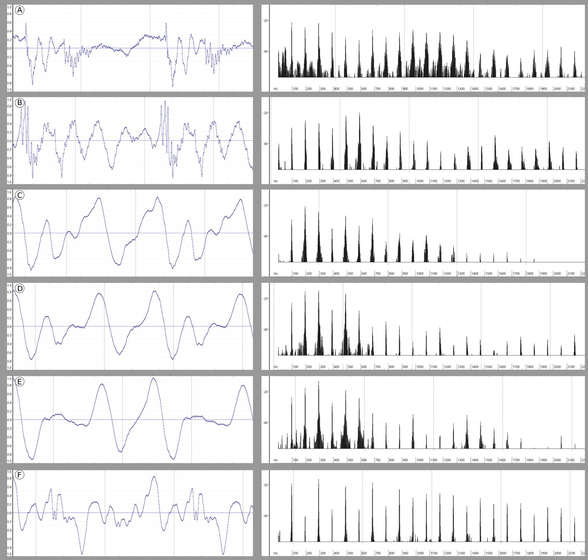</a><figcaption id="npqqr5rtip3-figure-caption"><div><strong>Image 10</strong><div></div></div></figcaption></figure><p>Waveforms and spectra of normalized P-D Sax samples, recorded with different sound horns and bells: A) mouthpiece only, B) mouthpiece with the prototype 2 sound horn, C) mouthpiece with the prototype 3 sound horn, D) mouthpiece with the prototype 3 sound horn + hyperbolic bell, E) mouthpiece with the prototype 3 sound horn + pear-shaped bell, F) bass clarinet, added for reference. All samples were recorded with Microtech Gefell MK 250 capsule and MV 220 P48 preamplifier from approximately 23 cm distance with similar dynamics.</p><figure class="audio"><audio controls preload="none" src="https://assets.pubpub.org/4a5x943a/41649973669487.wav"></audio><figcaption id="ndq2sqt2tkq-figure-caption"><div><strong>Audio 2</strong><div><p>Appendix A audio samples https://www.dropbox.com/s/ollm5r6mc5rhh01/appendix%20a%20samples.wav?dl=0</p></div></div></figcaption><div class="media-meta">Audio streamed from PubPub CDN (2 MB). <a href="https://assets.pubpub.org/4a5x943a/41649973669487.wav">Download</a></div></figure><h1 id="appendix-b">Appendix B</h1><h2 id="effect-of-lip-pressure-on-the-timbre-of-the-p-d-sax">Effect of lip pressure on the timbre of the P-D Sax</h2><figure id="nxfrsloam67" class="image"><a href="https://assets.pubpub.org/cwn6hgg3/51649970258761.png">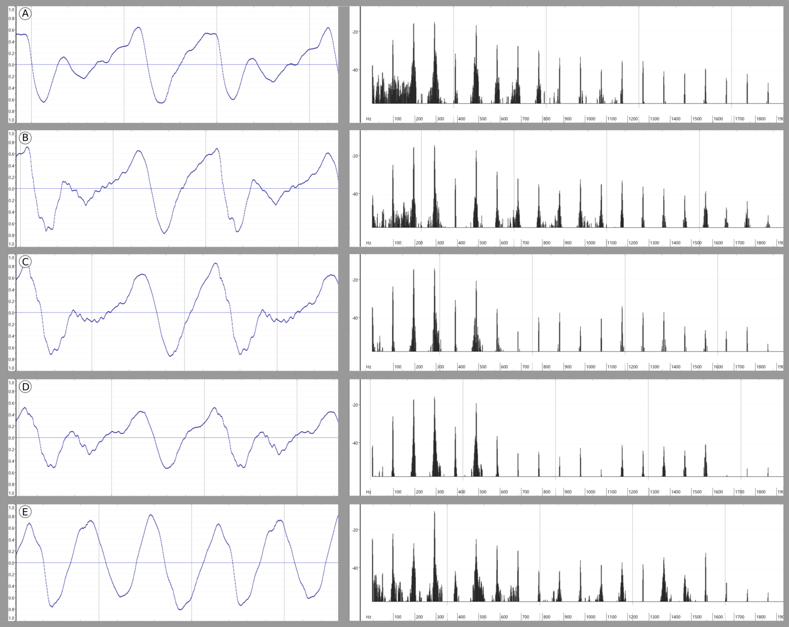</a><figcaption id="nxfrsloam67-figure-caption"><div><strong>Image 11</strong><div></div></div></figcaption></figure><p>Waveforms and spectra of normalized P-D Sax samples, recorded with different lip pressure, from A) softest, to E) hardest. All samples were recorded with Microtech Gefell MK 250 capsule and MV 220 P48 preamplifier from approximately 23 cm distance with similar dynamics.</p><figure class="audio"><audio controls preload="none" src="https://assets.pubpub.org/b3xfj6g8/21649973720868.wav"></audio><figcaption id="nsyn2f47hbu-figure-caption"><div><strong>Audio 3</strong><div><p>Appendix B audio samples https://www.dropbox.com/s/mb4jzc9ibhvwija/appendix%20b%20samples.wav?dl=0</p></div></div></figcaption><div class="media-meta">Audio streamed from PubPub CDN (1 MB). <a href="https://assets.pubpub.org/b3xfj6g8/21649973720868.wav">Download</a></div></figure><h1 id="appendix-c">Appendix C</h1><h2 id="formant-frequencies-of-the-p-d-sax">Formant frequencies of the P-D Sax</h2><figure id="n45f0nj7jco" class="image"><a href="https://assets.pubpub.org/by7ofu5y/11649970854726.png">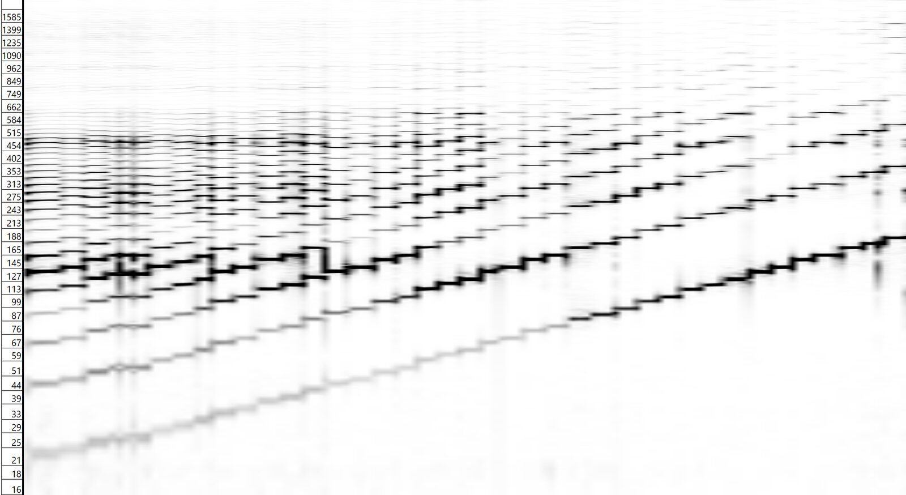</a><figcaption id="n45f0nj7jco-figure-caption"><div><strong>Image 12</strong><div></div></div></figcaption></figure><p>Sonogram of the full chromatic scale of the instrument, recorded with Microtech Gefell MK 250 capsule and MV 220 P48 preamplifier. The resonant frequency of the body alone has been determined at ~90 Hz, but according to the sonogram, the formant frequencies of a complete instrument are centered around 140, 300 and 500 Hz. Even though a square wave is used to drive the reed, the resulting soundwave has a more complex shape; both even and odd harmonics are present in the spectrum of the sound, whereas in a pure square wave even harmonics would be missing.</p><figure class="audio"><audio controls preload="none" src="https://assets.pubpub.org/mucs5p81/61649973755607.wav"></audio><figcaption id="n014i8yna96-figure-caption"><div><strong>Audio 4</strong><div><p>Appendix C audio samples https://www.dropbox.com/s/xejzh2rvfv23wx6/appendix%20c%20samples.wav?dl=0</p></div></div></figcaption><div class="media-meta">Audio streamed from PubPub CDN (4 MB). <a href="https://assets.pubpub.org/mucs5p81/61649973755607.wav">Download</a></div></figure><h1 id="appendix-d">Appendix D</h1><h2 id="effect-of-different-sound-horns-and-bells-on-the-loudness-of-the-p-d-sax">Effect of different sound horns and bells on the loudness of the P-D Sax</h2><figure id="nea5fyq19x4" class="image"><a href="https://assets.pubpub.org/c279lnth/01649971032830.png"></a><figcaption id="nea5fyq19x4-figure-caption"><div><strong>Image 13</strong><div></div></div></figcaption></figure><p>Relative loudness in Db RMS of P-D Sax samples recorded with different sound horns and bells: A) mouthpiece only, B) mouthpiece with the prototype 2 sound horn, C) mouthpiece with the prototype 3 sound horn, D) mouthpiece with the prototype 3 sound horn + pear-shaped, E) mouthpiece with the prototype 3 sound horn + hyperbolic bell. All samples were recorded with Microtech Gefell MK 250 capsule and MV 220 P48 preamplifier from approximately 23 cm distance with similar dynamics.</p><h1 id="appendix-e">Appendix E</h1><h2 id="results-of-the-consultations-with-expert-woodwind-players">Results of the consultations with expert woodwind players</h2><p>Observations of expert A (classically trained alto saxophone player):</p><ul id="n9sa3w7nsbk"><li><p>simplified keywork seen as an obstacle, he would prefer it to resemble the Boehm system more closely, which would require additional keys for semitones, although existing p-d sax keywork could be remapped to better reflect the Boehm system;</p></li><li><p>the loose embouchure might be more familiar for double-reed players, but is difficult for a single reed player at the first glance; it might get some time to get used to; it also might be responsible for diminished dynamic range, as compared to the saxophone;</p></li><li><p>on a saxophone, holding the mouthpiece firmly with mouth/teeth also stabilizes the instrument and leaves more freedom for finger movements, which is impossible on the P-D Sax;</p></li><li><p>on the other hand, the embouchure doesn’t require much effort so it might be useful for amateurs and beginners;</p></li><li><p>the neck profile might be to narrow; widening it might positively affect the dynamic range;</p></li><li><p>a harder reed might improve P-D Sax’s performance in the high register;</p></li><li><p>the fact that the body in the instrument acts as a sound horn and affects the volume and timbre is a beneficial feature;</p></li><li><p>the continuous keys, allowing smooth note transitions, are an advantage compared to both the saxophone and the EWI;</p></li></ul><p><br/>Observations of expert B (experienced jazz and pop alto and soprano saxophone player with classical training; also a music teacher):</p><ul id="nwpeanrzv50"><li><p>at a first glance, a seasoned woodwind player finds it difficult to produce sound, regarding the habit of tight embouchure and “biting” the mouthpiece at the tip; inserting the mouthpiece deeper into mouth, which is required to properly produce the sound on the P-D Sax, feels unnatural, as well as more prominent reed vibration does;</p></li><li><p>playing with articulation other than legato is difficult, it would need getting used to</p></li></ul><ul id="n68pqbcdn92"><li><p>she compared P-D Sax favorably to EWI which she considers uncomfortable both in terms of the touch key interface and the highly resistant breath sensor</p></li><li><p>the octave switch and the key interface feels unintuitive, although it can be gotten used to </p></li><li><p>when asked if she would consider using the p-d sax herself, she answered that she could see a limited use as an instrument for experimental and world music as it has an unusual timbre;</p></li><li><p>she sees its strength mostly as an educational instrument - small weight, simplified diatonic keywork and the ease of embouchure makes it easy to start playing, as compared to traditional woodwinds’ steep learning curve; she commented that “children would love it”;</p></li></ul><p>Observations of expert C (Bb, bass and contrabass clarinet player, with experience in contemporary music performance and free improvisation):</p><ul id="n1urqx2gv0x"><li><p>the P-d sax has an exceptionally low pitch for its size;</p></li></ul><ul id="nvyc66vqai4"><li><p>while testing the p-d sax himself, he almost immediately found the right embouchure;</p></li><li><p>the interface is immature as compared to the clarinet, on the other hand its simplicity might be inspiring;</p></li><li><p>he observed that for a creative musician, working with such an instrument, which poses various challenges in terms of unusual playing technique, might be more inspiring than trying to find new features in a well known instrument;</p></li><li><p>when asked if he was interested in spending more time with the instrument and how it would fit in his toolset, he answered that he would immediately start thinking of compositions that would use specific abilities of the P-D Sax, such as unusual sounds and effects;</p></li><li><p>he observed that the P-D Sax and bass clarinet sound good in duet and that the P-D Sax sounds indeed like an acoustic instrument;</p></li><li><p>he considers the timbre of the P-D Sax similar to some folk instruments, especially bagpipes;</p></li><li><p>he considered the P-D Sax more interesting than EWI, which he feels doesn’t have much advantage over keyboard instruments;</p></li><li><p>he repeatedly observed that the P-D sax is a perfect transition in between the EWI and acoustic woodwind instruments, the fact that the horn and bells change the sound of the P-D Sax is an advantage over fully electronic EWI; </p></li><li><p>the continuous keys are an advantage both compared to EWI and bass clarinet;</p></li></ul><p><br/></p><div class="pub-notes"><h1>Citations</h1><ol><li id="citation-bGVh/F5DgI-bottom"><span class="pub-note-content-component"><span><div class="csl-bib-body">  <div data-csl-entry-id="temp_id_2967432341113654" class="csl-entry">Pätynen, J., &#38; Lokki, T. (2010). Directivities of Symphony Orchestra Instruments. <i>Acta Acustica United with Acustica</i>, <i>96</i>(1), 138–167. <a href="https://doi.org/10.3813/aaa.918265">https://doi.org/10.3813/aaa.918265</a></div></div></span><span></span></span> <a href="#citation-bGVh/F5DgI-inline" class="return-link">↩</a></li><li id="citation-UKA77SnSzu-bottom"><span class="pub-note-content-component"><span><div class="csl-bib-body">  <div data-csl-entry-id="bloland2007electromagnetically" class="csl-entry">Bloland, P. (2007). The Electromagnetically-prepared Piano and its Compositional Implications. <i>ICMC</i>.</div></div></span><span></span></span> <a href="#citation-UKA77SnSzu-inline" class="return-link">↩</a></li><li id="citation-cFr6zJy+1v-bottom"><span class="pub-note-content-component"><span><div class="csl-bib-body">  <div data-csl-entry-id="https://doi.org/10.5281/zenodo.1177849" class="csl-entry">McPherson, A., &#38; Kim, Y. (2010). Augmenting The Acoustic Piano With Electromagnetic String Actuation And Continuous Key Position Sensing. <i>Zenodo</i>. <a href="https://doi.org/10.5281/ZENODO.1177849">https://doi.org/10.5281/ZENODO.1177849</a></div></div></span><span></span></span> <a href="#citation-cFr6zJy+1v-inline" class="return-link">↩</a></li><li id="citation-pcYU17iMV3-bottom"><span class="pub-note-content-component"><span><div class="csl-bib-body">  <div data-csl-entry-id="https://doi.org/10.5281/zenodo.1178127" class="csl-entry">Overholt, D. (2011). The Overtone Fiddle: An Actuated Acoustic Instrument. <i>Zenodo</i>. <a href="https://doi.org/10.5281/ZENODO.1178127">https://doi.org/10.5281/ZENODO.1178127</a></div></div></span><span></span></span> <a href="#citation-pcYU17iMV3-inline" class="return-link">↩</a></li><li id="citation-IHm5WaCB2O-bottom"><span class="pub-note-content-component"><span><div class="csl-bib-body">  <div data-csl-entry-id="https://doi.org/10.5281/zenodo.3672958" class="csl-entry">Pardue, L., Buys, K., Overholt, D., McPherson, A. P., &#38; Edinger, M. (2019). <i>Separating sound from source: sonic transformation of the violin through electrodynamic pickups and acoustic actuation</i>. <a href="https://doi.org/10.5281/ZENODO.3672958">https://doi.org/10.5281/ZENODO.3672958</a></div></div></span><span></span></span> <a href="#citation-IHm5WaCB2O-inline" class="return-link">↩</a></li><li id="citation-zvonuO/G/B-bottom"><span class="pub-note-content-component"><span><div class="csl-bib-body">  <div data-csl-entry-id="https://doi.org/10.5281/zenodo.1302579" class="csl-entry">Úlfarsson, H. (2018). The Halldorophone: The Ongoing Innovation Of A Cello-Like Drone Instrument. <i>Zenodo</i>. <a href="https://doi.org/10.5281/ZENODO.1302579">https://doi.org/10.5281/ZENODO.1302579</a></div></div></span><span></span></span> <a href="#citation-zvonuO/G/B-inline" class="return-link">↩</a></li><li id="citation-Wk9WdEkYjc-bottom"><span class="pub-note-content-component"><span><div class="csl-bib-body">  <div data-csl-entry-id="https://doi.org/10.5281/zenodo.1176266" class="csl-entry">Barton, S., Prihar, E., &#38; Carvalho, P. (2017). Cyther: A Human-Playable, Self-Tuning Robotic Zither. <i>Zenodo</i>. <a href="https://doi.org/10.5281/ZENODO.1176266">https://doi.org/10.5281/ZENODO.1176266</a></div></div></span><span></span></span> <a href="#citation-Wk9WdEkYjc-inline" class="return-link">↩</a></li><li id="citation-b/046ssvA8-bottom"><span class="pub-note-content-component"><span><div class="csl-bib-body">  <div data-csl-entry-id="temp_id_39979247415675423" class="csl-entry">Overholt, D., Berdahl, E., &#38; Hamilton, R. (2011). Advancements in Actuated Musical Instruments. <i>Organised Sound</i>, <i>16</i>(2), 154–165. <a href="https://doi.org/10.1017/s1355771811000100">https://doi.org/10.1017/s1355771811000100</a></div></div></span><span></span></span> <a href="#citation-b/046ssvA8-inline" class="return-link">↩</a></li><li id="citation-FSNVsLDl+I-bottom"><span class="pub-note-content-component"><span></span><span><p>Walters, J. L. (1987) The Search For Expression, <em>Sound On Sound, </em>2(11), 36</p></span></span> <a href="#citation-FSNVsLDl+I-inline" class="return-link">↩</a></li><li id="citation-7Sc0R0Ev77-bottom"><span class="pub-note-content-component"><span><div class="csl-bib-body">  <div data-csl-entry-id="sion2020harmonic" class="csl-entry">Sion, G. (2020). <i>Harmonic interaction for monophonic instruments through musical phrase to scale recognition</i>.</div></div></span><span></span></span> <a href="#citation-7Sc0R0Ev77-inline" class="return-link">↩</a></li><li id="citation-sjUDxKQ5eU-bottom"><span class="pub-note-content-component"><span></span><span><p>Ridden, P. (2020). Yamaha blows out authentic-sounding digital saxophone. Retrieved from <a href="https://newatlas.com/music/yamaha-yds-150-digital-saxophone/">https://newatlas.com/music/yamaha-yds-150-digital-saxophone/</a></p></span></span> <a href="#citation-sjUDxKQ5eU-inline" class="return-link">↩</a></li><li id="citation-srYbwT8lJp-bottom"><span class="pub-note-content-component"><span><div class="csl-bib-body">  <div data-csl-entry-id="https://doi.org/10.5281/zenodo.1178710" class="csl-entry">Berdahl, E. (2014). How To Make Embedded Acoustic Instruments. <i>Zenodo</i>. <a href="https://doi.org/10.5281/ZENODO.1178710">https://doi.org/10.5281/ZENODO.1178710</a></div></div></span><span></span></span> <a href="#citation-srYbwT8lJp-inline" class="return-link">↩</a></li><li id="citation-c9Rb3XHopg-bottom"><span class="pub-note-content-component"><span></span><span><p>Granzov, J. &amp; Michon, R. (2013). Research Report: Hybrid Clarinet Project. Stanford University, CCRMA</p></span></span> <a href="#citation-c9Rb3XHopg-inline" class="return-link">↩</a></li><li id="citation-dJsICXf0+2-bottom"><span class="pub-note-content-component"><span><div class="csl-bib-body">  <div data-csl-entry-id="https://doi.org/10.5281/zenodo.1179531" class="csl-entry">Favilla, S., Cannon, J., Hicks, T., Chant, D., &#38; Favilla, P. (2008). Gluisax : Bent Leather Band’S Augmented Saxophone Project. <i>Zenodo</i>. <a href="https://doi.org/10.5281/ZENODO.1179531">https://doi.org/10.5281/ZENODO.1179531</a></div></div></span><span></span></span> <a href="#citation-dJsICXf0+2-inline" class="return-link">↩</a></li><li id="citation-5LekVQ0sdY-bottom"><span class="pub-note-content-component"><span><div class="csl-bib-body">  <div data-csl-entry-id="https://doi.org/10.5281/zenodo.1176398" class="csl-entry">Burtner, M. (2002). Noisegate 67 For Metasaxophone: Composition And Performance Considerations Of A New Computer Music Controller. <i>Zenodo</i>. <a href="https://doi.org/10.5281/ZENODO.1176398">https://doi.org/10.5281/ZENODO.1176398</a></div></div></span><span></span></span> <a href="#citation-5LekVQ0sdY-inline" class="return-link">↩</a></li><li id="citation-BQPO1fgjmG-bottom"><span class="pub-note-content-component"><span><div class="csl-bib-body">  <div data-csl-entry-id="https://doi.org/10.5281/zenodo.3672996" class="csl-entry">Flores, C. R., Murphy, J., &#38; Norris, M. (2019). <i>HypeSax: Saxophone acoustic augmentation</i>. <a href="https://doi.org/10.5281/ZENODO.3672996">https://doi.org/10.5281/ZENODO.3672996</a></div></div></span><span></span></span> <a href="#citation-BQPO1fgjmG-inline" class="return-link">↩</a></li><li id="citation-VopKP2ayKN-bottom"><span class="pub-note-content-component"><span><div class="csl-bib-body">  <div data-csl-entry-id="li2016effect" class="csl-entry">Li, W., Almeida, A., Smith, J., &#38; Wolfe, J. (2016). The effect of blowing pressure, lip force and tonguing on transients: A study using a clarinet-playing machine. <i>The Journal of the Acoustical Society of America</i>, <i>140</i>(2), 1089–1100.</div></div></span><span></span></span> <a href="#citation-VopKP2ayKN-inline" class="return-link">↩</a></li><li id="citation-baNQcuGsrP-bottom"><span class="pub-note-content-component"><span><div class="csl-bib-body">  <div data-csl-entry-id="https://doi.org/10.5281/zenodo.1177897" class="csl-entry">Solis, J., Petersen, K., Yamamoto, T., Takeuchi, M., Ishikawa, S., Takanishi, A., &#38; Hashimoto, K. (2010). Development Of The Waseda Saxophonist Robot And Implementation Of An Auditory Feedback Control. <i>Zenodo</i>. <a href="https://doi.org/10.5281/ZENODO.1177897">https://doi.org/10.5281/ZENODO.1177897</a></div></div></span><span></span></span> <a href="#citation-baNQcuGsrP-inline" class="return-link">↩</a></li><li id="citation-iiInJY0GPt-bottom"><span class="pub-note-content-component"><span></span><span><p>Marshall, A (2017) 'The status quo will be obliterated!' – the inventors making their own musical instruments. Retrieved from <a href="https://www.theguardian.com/music/2017/nov/24/the-status-quo-will-be-obliteratedthe-inventors-making-their-own-musical-instruments">https://www.theguardian.com/music/2017/nov/24/the-status-quo-will-be-obliteratedthe-inventors-making-their-own-musical-instruments</a></p></span></span> <a href="#citation-iiInJY0GPt-inline" class="return-link">↩</a></li><li id="citation-AD3S350RmC-bottom"><span class="pub-note-content-component"><span></span><span><p>Self, D. (2022) The Auxetophone &amp; Other Compressed-Air Gramophones. Retrieved from <a href="http://www.douglasself.com/MUSEUM/COMMS/auxetophone/auxetoph.htm">http://www.douglasself.com/MUSEUM/COMMS/auxetophone/auxetoph.htm</a></p></span></span> <a href="#citation-AD3S350RmC-inline" class="return-link">↩</a></li><li id="citation-aZHGHXaDze-bottom"><span class="pub-note-content-component"><span><div class="csl-bib-body">  <div data-csl-entry-id="hopkin1996musical" class="csl-entry">Hopkin, B. (1996). <i>Musical instrument design: Practical information for instrument making</i>. See Sharp Press.</div></div></span><span></span></span> <a href="#citation-aZHGHXaDze-inline" class="return-link">↩</a></li><li id="citation-ddvxO3PI8/-bottom"><span class="pub-note-content-component"><span><div class="csl-bib-body">  <div data-csl-entry-id="https://doi.org/10.5281/zenodo.1180533" class="csl-entry">McPherson, A. (2012). Techniques And Circuits For Electromagnetic Instrument Actuation. <i>Zenodo</i>. <a href="https://doi.org/10.5281/ZENODO.1180533">https://doi.org/10.5281/ZENODO.1180533</a></div></div></span><span></span></span> <a href="#citation-ddvxO3PI8/-inline" class="return-link">↩</a></li><li id="citation-pa1Xius/2z-bottom"><span class="pub-note-content-component"><span><div class="csl-bib-body">  <div data-csl-entry-id="article" class="csl-entry">Conforti, S., &#38; Güsewell, A. (2015). PRIME Gesture Recognition applied to the Paetzold recorder: New paradigms for the interaction between recorder players and machines in live electronic music. <i>Dissonance</i>, <i>131</i>, 10–15.</div></div></span><span></span></span> <a href="#citation-pa1Xius/2z-inline" class="return-link">↩</a></li><li id="citation-aZHGHXaDze-bottom"><span class="pub-note-content-component"><span><div class="csl-bib-body">  <div data-csl-entry-id="hopkin1996musical" class="csl-entry">Hopkin, B. (1996). <i>Musical instrument design: Practical information for instrument making</i>. See Sharp Press.</div></div></span><span></span></span> <a href="#citation-aZHGHXaDze-inline" class="return-link">↩</a></li><li id="citation-pa1Xius/2z-bottom"><span class="pub-note-content-component"><span><div class="csl-bib-body">  <div data-csl-entry-id="article" class="csl-entry">Conforti, S., &#38; Güsewell, A. (2015). PRIME Gesture Recognition applied to the Paetzold recorder: New paradigms for the interaction between recorder players and machines in live electronic music. <i>Dissonance</i>, <i>131</i>, 10–15.</div></div></span><span></span></span> <a href="#citation-pa1Xius/2z-inline" class="return-link">↩</a></li><li id="citation-ZIyo53CRIB-bottom"><span class="pub-note-content-component"><span></span><span><p>Powell, M. (2012). Acoustic Analysis of the Viola. Department of Physics, UC Davis.</p></span></span> <a href="#citation-ZIyo53CRIB-inline" class="return-link">↩</a></li></ol></div></div></div>

</article></main>
<footer class="site">Built from Stefano Fasciani's December 2025 export of <a href="https://nime.pubpub.org">nime.pubpub.org</a>. Content © the authors, <a href="https://creativecommons.org/licenses/by/4.0/">CC BY 4.0</a>. The PubPub version is the version of record. <a href="https://github.com/NIME-conference/nime-website/issues/94">Discussion</a>.</footer>
</body></html>